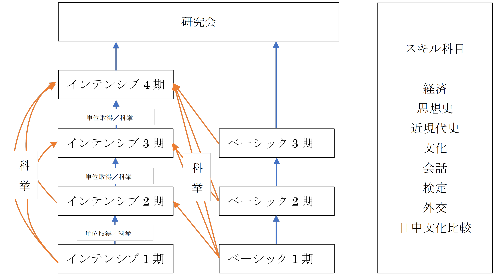

設置コース、科目について
SFCには、インテンシブコースとベーシックコースが設置されており、学生は自由に選ぶことができます。インテンシブコースは週4コマの授業、SFC独自の直接教授に基づいた授業により、インテンシブ1～4まで履修することにより、2年間で実践的なコミュニケーション能力を身につけることができます。授業は全て中国語ですが、履修者には、事前にメインテキスト、単語帳、文法書が配布されますので、しっかり予習や復習をすることで、日本語で入力した知識と教員の話す中国語が結びつき、また、逆に教員の話す中国語が日本語で入力した知識と結びつき、次第に理解できるようになります。将来、中国語を用いて、研究やビジネスに携わりたい方は、是非インテンシブコースを履修してください。
インテンシブコース
私たちが開講するインテンシブコース最大の特徴は直接導入法です。つまり、授業は全て目標言語（中国語）を用いて運営されます。そのため、学習者の皆さんは、中国の子供が中国語を獲得するのと同様の方法で目標言語（中国語）を学習し、習得することができます。日本の高等教育機関において、直接法を用いて中国語を教授している大学は非常に稀です。中国語学科や中国語専攻のある大学であっても、初級～中級のすべての授業を直接法で運営している所は無いに等しいでしょう。このようなSFC独自の教育方法は、高い教育効果を示しており、皆さんの先輩の中には、インテンシブ2期終了時に、中国政府公認の中国語検定試験（HSK）で4級や5級を取得している方もいます。
授業が全て中国語で行われるとなると、不安に思う方もいらっしゃるかもしれませんが、中国語インテンシブを担当する教員の中には日本人教員もおりますし、また、何より全ての教員が豊富な教育経験を持っており、身振り手振りも交えながら熱心に授業を行っています。
インテンシブ1
中国語をはじめて学ぶ者を対象としたクラスです。学期末には、課文の暗唱大会やミニドラマの発表会を企画する予定です。なお、他の学生との公平性を保つために、中国語を体系的に学んだ経験のある方は履修することができません。
インテンシブ2
インテンシブ1修了か、それに準じる中国語運用能力を有する者を対象としたクラスです。科挙試験（SFC独自の中国語レベル判定テスト）をクリアした、中国語既修者も履修することができます。学期末には、身に付けた力を競い合う寸劇大会を実施しています。
インテンシブ3
インテンシブ2修了か、それに準じる中国語運用能力を有する者を対象としたクラスです。科挙試験（SFC独自の中国語レベル判定テスト）をクリアした、中国語既修者も履修することができます。学期末には、留学生を招いて、日本語使用禁止のキャンパスツアーや交流会を実施しています。また、インテンシブ3では、研究会で中国語を使うことができるよう、中国語の読解や作文の練習にも力を入れています。
インテンシブ4
インテンシブ３までが生活中国語を意識しているのに対して、インテンシブ４はアカデミック・ユースを強く意識した内容になっています。SFCは、「問題発見、問題解決」をスローガンにしたキャンパスです。旅行や留学ばかりを意識した外国語教育が、SFCの精神に沿うとは、到底言えません。良くも悪くも、中国は、今我々が向き合わねばならない最大の「問題」の一つです。我々は、およそ価値観を共有しているとは言いがたい、この世界第二位の経済大国となった隣人と、逃げることなく向き合わねばならないのです。そしてこの「問題」をめぐり、対話するにせよ分析するにせよ、アカデミックな中国語能力は必須のツールとなります。民主人権、民族宗教、農村、経済、法制、安全保障、政治制度、外交政策、社会、文化、台湾等のトピックについて、中国語を通して学ぶとともに、これらの問題について、中国語を通して発信する訓練をします。CCTV７時のニュースを聞き取れる聴力、中国語PPTでプレゼンテーションができる発信力を目標とします。
ベーシックコース
ベーシックコースは、他の大学における第二外国語授業と同じく、日本語を教授言語として用いた、週2コマの授業です。1〜3まで設置されており、習得できる表現、知識、進度はインテンシブと同じです。こちらも各担当教員が工夫しているので、楽しく中国語を学ぶことができます。また、ベーシックコースで中国語に触れていく中で、より実践的な中国語を身に付けることを希望する学生は、科挙をクリアすることで、インテンシブコースを受講することができます。
スキル科目
また、インテンシブ3、ベーシック3まで学び終えた学生を対象に開講しているのが、各種スキル科目です。テーマは、春学期：経済、思想史、ビジネス、近現代史、秋学期：会話、検定、外交、日中文化比較と多岐にわたります。複数履修すれば、幅広い表現を身に付けることができます。スキル科目は、実力に応じて1年生から履修することも可能です。
中国語コンテンツ
SFCには中国語による講義科目（中国語コンテンツ）もあります。
先端科目としての履修と、言語科目としての履修が可能です。
カリキュラム

インテンシブ、ベーシック、スキルについて、詳しいことは下のそれぞれの項目のページを参照してください。なお、シラバスはSFCシラバス検索サイトをご覧ください。